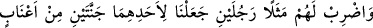
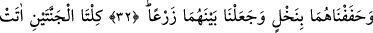
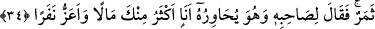
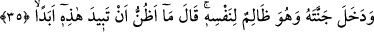
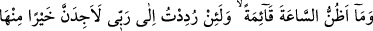
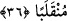

ŞU İKİ ADAMI
MİSAL OLARAK ANLAT
32. Onlara, şu iki adamı misal olarak anlat: Bunlardan birine iki üzüm bağı
vermiş, her ikisinin de etrafını hurmalarla donatmış, aralarında da ekinler
bitirmiştik.
33. İki bağın ikisi de yemişlerini vermiş, hiçbirini eksik bırakmamıştı. İkisinin
arasından bir de ırmak fışkırtmıştık.
34. Bu adamın başka geliri de vardı. Bu yüzden arkadaşıyla konuşurken ona şöyle
dedi: “Ben, servetçe senden daha zenginim; insan sayısı bakımından da senden
daha güçlüyüm.”
35. (Böyle gurur ve kibirle) kendisine zulmederek bağına girdi. Şöyle dedi:
“Bunun, hiçbir zaman yok olacağını sanmam.”
36. “Kıyâmetin kopacağını da sanmıyorum. Şâyet Rabbimin huzuruna
götürülürsem, hiç şüphem yok ki, (orada) bundan daha hayırlı bir akıbet bulurum.”
“Onlara şu iki adamı misal olarak anlat;” Yâni, ey Muhammed, Allah’ın nimetleri
içinde yüzen kâfirlerle, fakirliğin sıkıntılarına göğüs geren mü’minlere şu iki adamı
misal olarak anlat! Burada söz konusu olan kişiler ya hayâlî iki adamdır ya da
İsrâiloğulları’ndan iki kardeştir.
Celâleyn Tefsîri’nde şöyle der: Âyette İsrâiloğulları’ndan bir kralın iki oğlu
kastedilmektedir. Ebû Hayyân der ki: “(34.) âyetteki “arkadaşıyla konuşurken ona
şöyle dedi” ifâdesinden onların kardeş olmadıkları anlaşılmaktadır.”
Fakir (Bursevî) der ki; “Bu ifâde kelâmın aslını gözden kaçırmak demektir. Çünkü
onlara “racüleyn (iki adam)” denilmesi bir kardeşin diğerine “arkadaş” demesine mâni
değildir. Yine kâfir olan kardeşin, müslüman olanın elinden tutup bahçelerini ona